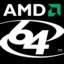

|
Acknowledgments |
| Navigation |
The product name Miles Sound System, the Miles logo, and XMIDI are
all copyrighted and trademarked by RAD Game Tools, Inc.
As a licensee of Miles, you must abide by the terms set forth in your license agreement. Please refer to that agreement if you have any questions about what you may or may not do with this documentation or the software to which it pertains. Miles is not copy protected, but it is copyrighted. We think our license agreements are fair, and that our software is reasonably priced for the quality and effort we have put into it. Using our software in ways other than allowed by your license agreement violates federal, civil, and criminal law. We rely primarily on your good faith not to violate our copyright; please respect it.
This software and documentation are provided "as is" without warranty of any kind, either expressed or implied, including, but not limited to, the implied warranties of merchantability and fitness for a particular purpose. In no event will RAD Game Tools, Inc. be liable to you for damages, including any general, special, incidental or consequential damages arising out of the use or inability to use the product (including, but not limited to, loss of data).
The Miles Sound System was written and designed by John Miles, Dan Thompson, and Jeff Roberts.
Special thanks also to Mitch Soule and Casey Muratori!
Clean room Ogg implementation by Sean Barrett.
Optimizations by Terje Matheson and Danjel McGougan.
MP3 optimizations and PS2 assembly by Michael Abrash and Mike Sartain.
Additional programming by Dan Teven. Initial filter programming by Nick Skrepetos.

Thanks to AMD for their kind support during the development of Miles for Windows 64!
 SRS Circle Surround encoder graciously provided by SRS Labs who were wonderful
to work with. Circle Surround, SRS and SRS logo are trademarks of SRS Labs, Inc.
SRS Circle Surround encoder graciously provided by SRS Labs who were wonderful
to work with. Circle Surround, SRS and SRS logo are trademarks of SRS Labs, Inc.
The Extended MIDI (XMIDI) standard was designed in collaboration with the musicians, programmers, and developers at Origin Systems in Austin, Texas. In particular, we gratefully acknowledge the expert assistance of Martin Galway, Dana Glover, Chris Roberts, Marc Schaefgen, Gary Scott Smith, Nenad Vugrinec, and Kirk Winterrowd in the evolution of the XMIDI standard. Thanks also to Ken Arnold and George (`The Fat Man`) Sanger for their indispensable advice and support.
Sample digital audio files kindly supplied by Rapid Eye Entertainment. Sample MIDI file and DLS instruments kindly supplied S3, Inc.
RAD's automatic documentation system was written by Casey Muratori.
Voxware Voice Chat Codecs licensed from Voxware, Inc. Copyright (C) 1996 Voxware, Inc. Voxware-enabled!
All brand and product names mentioned in this documentation are trademarks or registered trademarks of their respective companies.
 Other Miles Sound System Tools Other Miles Sound System Tools |
 Introduction Introduction |
 Changelog Changelog |

|
Miles Sound System 9.3b
E-mail miles3@radgametools.com for technical support. Copyright © 1991-2012 by RAD Game Tools, Inc. All Rights Reserved. |

|